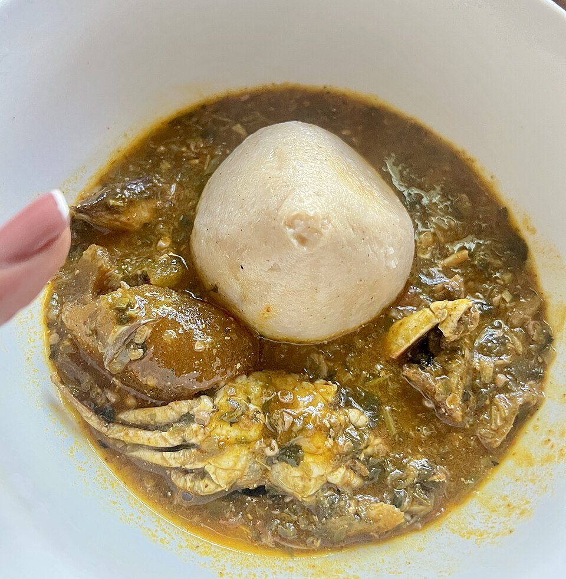

Ghana
Le banku ghanéen, une pâte légèrement acidulée de maïs et de manioc fermentés, avec une soupe de gombo au poisson.
← Retour aux recettes
 GhanaFufu et light soup
GhanaFufu et light soup NigeriaMoi moi
NigeriaMoi moi NigeriaAyamase (sauce verte et riz ofada)
NigeriaAyamase (sauce verte et riz ofada) NigeriaSuya
NigeriaSuya